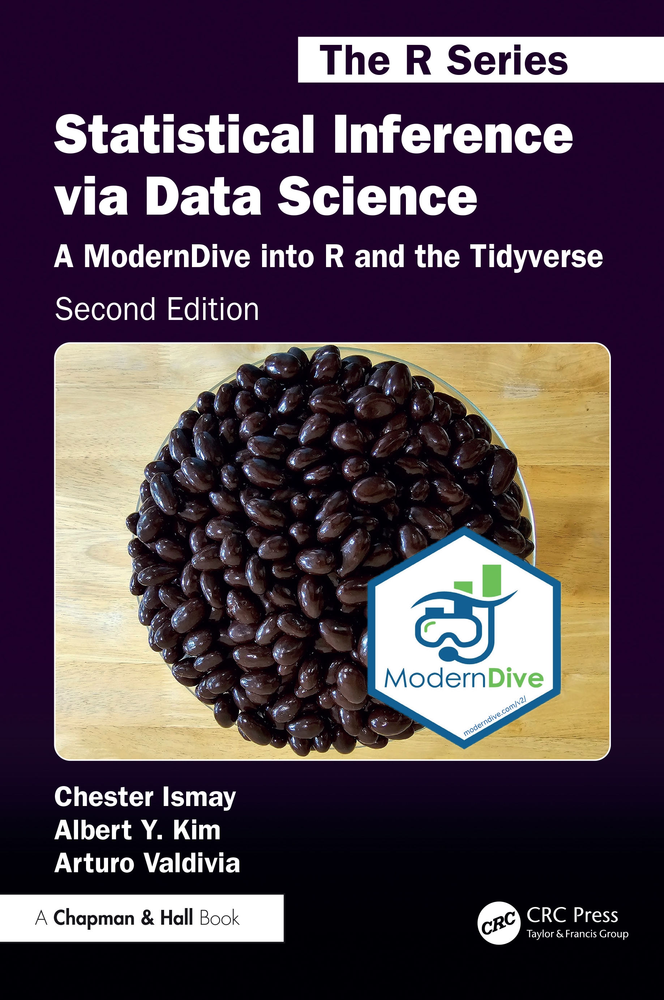

Projects
Books

Statistical Inference via Data Science
Co-authored with Albert Y. Kim and Arturo Valdivia, this free online book teaches statistics via computation and data science fundamentals using R and the tidyverse.
→ Print editionGetting Used to R, RStudio, and R Markdown
A hands-on, beginner-friendly guide to using R and RStudio for data analysis. Co-authored with Patrick Kennedy. Designed to empower new users with confidence and clarity.Shiny Apps
🎲 Probability Distribution Viewer
This Shiny app lets users explore and calculate probabilities for normal, binomial, Poisson, and other distributions.
🦅️ US State/District Shape Quiz
This interactive quiz tests knowledge of US state shapes, capitals, and major cities. Built using leaflet.
🇩🇪 German Federal State Shape Quiz
A similar German geography quiz that tests users on the shapes and cities of Germany’s federal states.
🏀 NBA Player Finder
Explore NBA players by name, position, or team in this app that uses the NBA API.
R Packages
I’ve authored or contributed to several R packages:
- infer — tidyverse-style statistical inference
- moderndive — companion to the ModernDive book
- fivethirtyeight — access to FiveThirtyEight datasets
- thesisdown — thesis templates in R Markdown
- azflights24
- nycflights23
- pnwflights22
- izzyuntappd
Projects at Reed College
Teaching Tools
Educational Outreach
Faculty & Student Support
- Supported departments: Chemistry, Biology, Linguistics, Sociology, Economics, Political Science, Mathematics
- Assisted senior thesis students with data analysis and visualization
- Provided R/R Markdown training for Chem 101/102 students